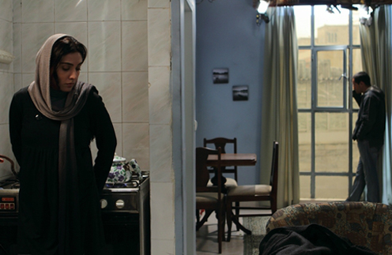

-
Strange Times, My Dear: Mohammad Rasoulof on Goodbye
by Aaron Cutler March 22, 2012

Goodbye, showing Thursday, March 22 and Saturday, March 24 as part of this year’s New Directors/New Films festival, is a film of reflections, mirrors, and sideward glances. The law student, Noora (Leyla Zareh), trapped inside her apartment, gives water to her turtle, roaming inside its glass case. She stares at the photo on her wall of a smiling child, which stares at her pregnant belly.
She is considering an abortion, and she’s also considering leaving Iran. We don’t know why she’s considering either, exactly, and don’t find out until late in the film. But she can’t get the abortion without her husband’s permission, and her husband is far from Tehran, in the South. Meanwhile, her deadline approaches.
In Mohammad Rasoulof’s latest film, we watch a world where nothing can be hidden, only obscured a little. It’s a world where men control women’s destinies, and can either abandon or invade their lives at any time. Its stark, flat images might seem familiar if you know Goodbye’s backstory: Rasoulof was making a film with friend and fellow director Jafar Panahi in March 2010 when they and 17 others were arrested and charged with creating propaganda against the state. Both he and Panahi were sentenced to six years in prison and banned from filmmaking. While Panahi’s appeal has since been denied (which, as anyone who’s seen This Is Not a Film knows, hasn’t stopped him), Rasoulof’s prison sentence was reduced from six to one year, and then suspended. He has since been released and given permission to work and to travel, and he is still speaking out.
He has consistently spoken out through his five films, which mix personal stories with larger social metaphors. Whether documentary (2008’s Head Wind) or mythology (2009’s The White Meadows), the films become stories of individuals emerging from within oppressed groups. He also speaks out in person, as he did at this year’s edition of Rotterdam. Thanks to Assiyeh Tabatabai for translating Rasoulof’s answers from Farsi to English, and to Aran Jawidiani for providing copies of his films.
What interests you about mirrors?
Are you asking that because I use mirrors in a few shots in the movie?
Yes. For example, the first time Noora receives visitors, you think that the characters are talking in the hallway, but then you realize that it’s actually a reflection of them.
This was really, to be honest, a technique. In the very closed and small spaces where I was shooting, I wanted to use the minimum number of cuts in shooting, so that I could show both sides in the same shot.
How did you find Noora’s apartment?
That’s the apartment of a friend of mine. I had seen it a couple of times, and I had basically designed the story based on that place. What was interesting for me was that when we were shooting within the apartment, I wanted to make clear, when a character enters, the number of steps it takes him or her to get inside. I wanted that to reflect how small and claustrophobic the space was. There was a wall somewhere there in the middle of the apartment that we had to knock down. We had to do a couple of things to bring it to our ideal set, but it had been on my mind from a long time before.
You knocked down a wall, but you also have times where parts of the room hide her from the viewer’s sight. Why?
The content and the subject of my movies are very important for me, but what I also like to do very much is to experience different art forms. I wanted to experience two things in this movie. One was to make the film with the minimum possible number of cuts, so as to make the shot as long as possible without cutting to the next scene. The other thing was to not necessarily bring everything in front of the camera. I wanted to use sound, shadows, light, and a lot of other aspects, rather than having the subject constantly in view.
I think any art form is very much influenced by the conditions the artist is in. I think the result, this movie that I’ve made, comes a lot from the conditions I was experiencing at the time. When I got out of prison, I thought a lot about how my experience would influence my next movie, and how I could use the opportunity to affect my next project. My next work of art.
I didn’t want the movie to be about me. I didn’t want to be the central character at all. And what happens is that there are two groups in Iran about which we hardly talk. It’s very difficult to talk about them. It’s very difficult to do anything worthwhile, certainly any worthwhile movie about them, and even I couldn’t reflect them properly. These are the journalists in Iran and the human rights activists. I have many of these journalists and human rights activists around me and among my friends. I can say that I have made this movie based on a lot of individuals’ lives, and of course our problems are very similar. So putting together these bits and pieces, I get the whole story.
It’s many peoples’ stories, told through one person.
Yes, that’s correct.
The film is also about an individual in a particular situation. What are the actual abortion laws that the film deals with?
Up to week 16 of pregnancy, it’s possible that if the child has problems, any kind of disability, you can get an abortion with a doctor’s supervision. But after week 16, due to Islamic law (Sharia), it’s not possible to get an abortion, even if the child has disabilities. It’s also not possible at any time for a woman to get an abortion without her husband’s permission. In a country where a woman needs her husband’s permission to get a hotel room, this is very natural and obvious.
What do you think of the absence of the woman’s husband?
In the conditions that I live in — in my environment, in my country — reform is often the result of small individual efforts. Individual efforts and personal efforts. Most of it is not coming from organized group effort. Therefore a lot of individuals go out of their way completely to try to make a difference, and it obviously affects their private lives a lot. So what I’m trying to say is that this journalist, the husband, is trying so hard to make a difference that he doesn’t even realize that his wife needs him. He doesn’t even realize that he’s abandoning a pregnant wife. But I really didn’t want to discuss any of the details of the guy’s life in the movie, and I didn’t want to explain his conditions at all. I only tried to make the audience realize at the end of the movie that he’s in prison. But the struggle he goes through, and all that? I didn’t want to touch it at all.
When I was writing the story, I didn’t really pay attention to classical drama’s fundamental issues. I wrote it as is if we are looking at a part of the life of this character, and me as the moviemaker, I had to follow this part of her life. I couldn’t manipulate the story as it was going.
You’ve said that this is the character’s fall, her final step. What do you mean? And why is it important to show this?
If we assume that the life of the main character is like a boxing match, what I want to make clear for my audience is that the beginning of my movie is the final punch, and then you have this fall, with events around it in slow motion. She falls in slow motion until she finally hits the ground. I could not make the movie about her fight. I could not picture the whole fight. I could only picture the final fall. My conditions, my situation, the life that I was living at the time would not allow me to portray the whole struggle. So I decided that, instead of portraying the whole fight, I would start the story with the final stroke, and portray all the details, from the hit to the final fall. But when she gets the hit, and throughout the movie until that final fall, you can realize what kind of a battle she’s gone through before we’ve arrived.
What is that final hit? She knows, she realizes at the very beginning of the movie that her child may have Down’s Syndrome. And that is the final stroke.
How did you decide to give the child Down’s Syndrome? And why do you delay telling the audience until so late in the film?
I think these are two very distinct questions, and I will answer them one by one. The first part of the question: Why Down’s Syndrome?
First of all I want to explain something, and that is that I chose the mother-child relationship because I wanted to show that non-physical violence is very present in Iran, even in the most intimate relationships. As you can see in this movie, the mother is willing to sacrifice the life of her child, by which I mean to give birth to a child with a disability, just because it can help her get residency outside Iran. I wanted to depict how harsh the situation is — everybody is being violent toward everybody else, non-physically. Even a mother against her child.
So why Down’s Syndrome? Because I think it’s a metaphor for the situation in my country right now. The relationship that I have with my country is like a familial relationship, and I feel like the whole country is retarded. It’s going a little bit slow and backwards, if you will, which is a result of the violence and aggression of the leaders. This is not only destroying the country, but also individual lives.
And why did I choose to reveal it when I did?
The style I chose was to be as one with the main character. And the character is trying to hide this as much as possible — she doesn’t want anyone to know, because she feels they will judge her. “You’re giving birth to a disabled child just because it will help you get what you want.” So there was no other place or moment in time where she could reveal this. It could have been possible if I brought it from the very beginning of the movie, or if she had talked to someone about it, but neither of these things happened. So the only place where we can find out about this reality is when the doctor tells her through second examinations.
Goodbye reminded me at times of the Palestinian filmmaker Elia Suleiman’s work. What do you think of Suleiman?
I like him very much. Divine Intervention is a very nice movie. The most important thing that really attracts my attention in that movie is that he never takes politicians seriously, and I like the way he belittles them. He has a comical look at politics in general, which I like. Emir Kusturica has it, too.
I’d really love to make a comedy someday, but I’m still stuck with the serious side of life. But I hope to get rid of this acute seriousness one day.